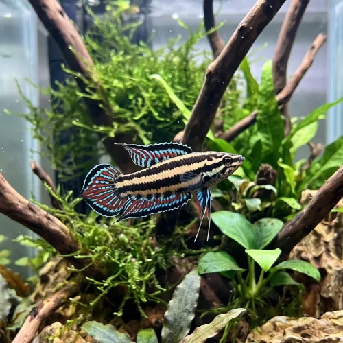

Nome popular principal
Gourami Licorice
Gourami Licorice, Gourami Alcaçuz, Licorice Gourami
Ficha de peixe
Anabantídeos e Labirintídeos
Uma joia rara e delicada das águas negras asiáticas, recomendada a aquaristas experientes dedicados a biótopos específicos.

Nome popular principal
Gourami Licorice, Gourami Alcaçuz, Licorice Gourami
Nome científico
Nome técnico essencial para taxonomia, cruzamento de manejo e referência editorial consistente.
Dificuldade de manejo
Use este nível como referência inicial, sempre considerando volume, estabilidade e compatibilidade do aquário.
Seção 1
Seção 2
Seções 4 a 6
Gourami Licorice tem hábito alimentar carnívoro. Baixa. 1 a 2 vezes ao dia. Dificilmente consome ração seca comercial, exigindo oferta constante de pequenos alimentos vivos como vermes do vinagre, microvermes e artêmia.
Machos apresentam cores vibrantes em azul e preto nas nadadeiras caudal e anal; fêmeas têm tons beges sutis e padronagem mais simples. Tipo de reprodução: Ovíparo. Dificuldade de reprodução: Avançado. A desova ocorre dentro de pequenas cavidades ou sob folhas, onde o macho constrói um ninho rudimentar e cuida dos ovos.
Alta. Substrato recomendado: Substrato escuro com acúmulo de folhas secas de amendoeira e pequenas cavernas. Necessidade de esconderijos: Alta. Aprecia aquários bem escurecidos por taninos de folhas e troncos, com pouca correnteza e muitas plantas flutuantes ou de sombra.
Seção 7
Pequeno e muito sensível à qualidade da água, necessita de parâmetros extremamente moles e ácidos para sobreviver a longo prazo.
Seção 8
Raramente. A espécie é seletiva e exige alimentação viva ou fresca, como microvermes, dáfnias e náuplios de artêmia.
Sendo nativo de pântanos de água negra, prefere água extremamente ácida com PH entre 3.5 e 6.0.
Não é recomendado, pois seu porte pequeno, extrema timidez e exigências de água ácida facilitam a competição por alimento com peixes mais ativos.